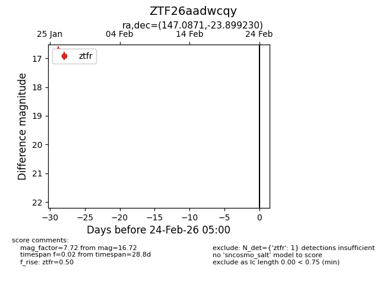
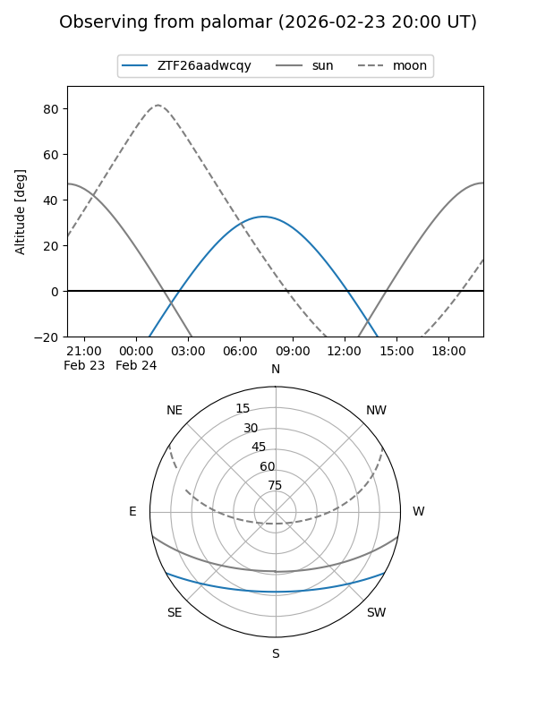

ZTF26aadwcqy
Target ZTF26aadwcqy at 2026-01-28 11:21
Aliases and brokers:
FINK: link
Lasair: link
ALeRCE: link
alt names
ZTF26aadwcqy (ztf,fink_ztf)
Coordinates:
equatorial (ra, dec) = 147.0871,-23.89923
equatorial (HMS+DMS) = 09:48:20.90,-23:53:57.23
galactic (l, b) = (257.7656,+22.50833)
Flags:
Photometry:
last ztfr=16.72
1 ztfr detections
Lightcurve

Visibility


Additional plots